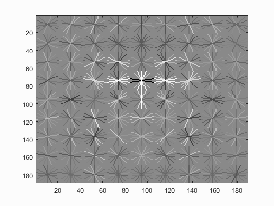
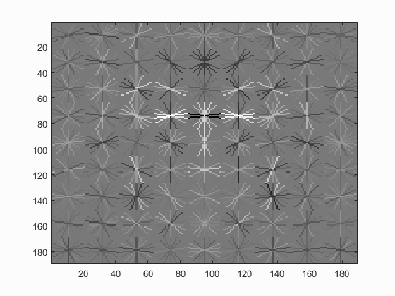
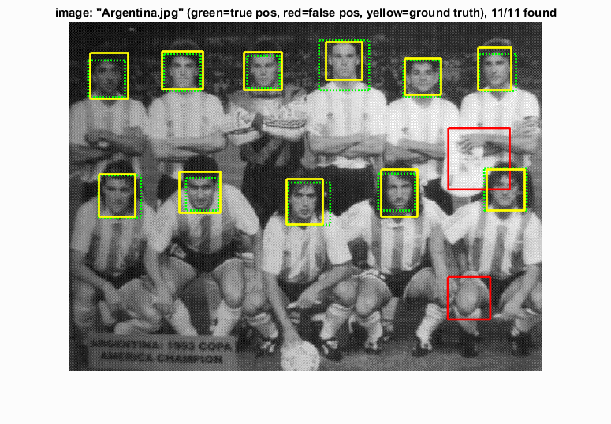
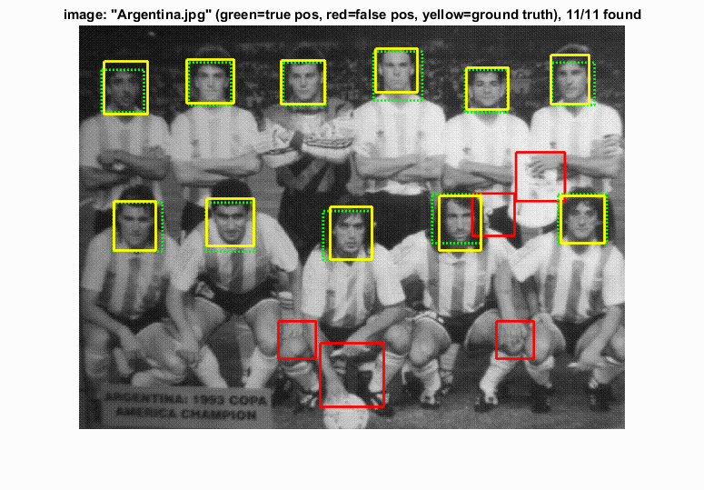

Face Detection using HoG Features
| Class | Instructor | Date | Language | Ta'ed | Code |
|---|---|---|---|---|---|
| CS 6476 Computer Vision | James Hays | Fall 2015 | MATLAB | No | Code N/A |
Here's looking at you, kid.
The purpose of this project was to detect faces in images. This was accomplished by using the following multi-step process :
- Convert images of a specific size of known faces to feature representations (Histogram of gradients)
- Convert random patches of images known to not contain any faces to the same feature representations.
- Build a classifier from these known positive (containing faces) and negative (not containing faces) feature sets.
- Built potential face sub-images from all test images with a sliding window of varying effective size (by changing image size to change effective window size).
- Use the built classifier to evaluate the potential face images found in the test images of interest.
- Choose the highest scoring potential face images as determined by the classifier, recording the those for each scale that perform the best for each image.
- Use Non-maximum surpression to minimze false positives and discard duplicates that vary only in scale, keeping the best scoring bounding boxes.
Overview of My Methods
I performed multiple steps beyond the specific scope of the program to optimize the program's performance, either to increase speed or to increase effective data size. A particularly easy low hanging fruit item I was able to do was to flip the images left-to-right for both positive and negative training examples, effectively doubling the size of my training data. This was possible due to the lateral symmetry of faces, at least in so far as the positive examples were concerned, and the fact that the negative images will still be non-faces if flipped.
In an effort to get a reasonable performance comparison between the two feature encoding methods, I also handled both the UoCTTI HoG features and the Dalal-Triggs Hog features that vl_Feat supports. In general the UoCTTI features performed about 5-10% better than the Dalal-Triggs features.
With complex processes such as the face detector, there are often multiple flags and parameters/hyperparameters that are required to govern the desired program flow and consumed in multiple locations and files within the program. Also, whenever working on classification tasks with large data sets requiring iterative refinement of these hyperparameters in order to optimize results, steps should be taken to compartmentalize computation so that there is a minimum of repeated work.
Pursuant to these concerns, I chose to save the data I constructed for every step of the detection process so that I would not need to re-run any working code on the same data ever. To accomplish this, as well as to facilitate modifying the output of the program, the following structure was built, containing flags governing which algorithms are used, prefixes for file names and directories to save intermediate data sets, and parameters governing the operations of the classifiers as well as the face detector itself.
%struct holding params and args for program control
%modifiable
fld1 = 'hog_cell_size'; val1 = 3; %size of HOG cell : 3,6,9
fld2 = 'use_DT'; val2 = false; %whether to use UoCTTI (vl's default) or DALAL_TRIGGS
fld3 = 'use_vlHog'; val3 = true; %whether or not to use vl's HOG or my implementation
fld13 = 'findHardNegative'; val13 = true; %whether to use hard negative mining
fld5 = 'useFlipPos'; val5 = true; %flip positive images to get more positive training samples
fld19 = 'num_negative_examples'; val19 = 20000; %approx # of negative examples
%non-mod
fld0 = 'template_size'; val0 = 36; %size of face template
fld4 = 'numHogOrients'; val4 = 9; %# of orientation directions in HOG - default is 9
fld6 = 'negFtrFilePrefix'; val6 = 'negFtrs';
fld7 = 'posFtrFilePrefix'; val7 = 'posFtrs';
fld8 = 'hardNegFilePrefix'; val8 = 'hnFtrs'; %saved file for found hard neg features
fld9 = 'svmLambda'; val9 = .00001; %lambda value for linear SVM
fld10 = 'nlSvmLambda'; val10 = .1; %non linear svm lambda
fld11 = 'nlSvmGam'; val11 = 11; %non linear svm gamma
fld12 = 'dtctrConfThresh'; val12 = .8; %detector confidence threshold
fld14 = 'classifier'; val14 = 'linSVM'; %classifier : 'linSVM', 'nonLinSVM', 'exemplarSVM' etc..
fld15 = 'dtctrFtrFilePrefix'; val15 = 'txtImgDtctr'; %file name prefix for text image detection files
fld16 = 'myFtrDescr'; val16 = 'none'; %which custom-built feature to use
fld17 = 'DvalDiv'; val17 = 31; %divisor val: UoCTTI == 31, DT hog == 36
fld18 = 'fileNameSuffix'; val18 = ''; %build specific file name suffix
fld20 = 'isHardNegDtctrRun'; val20 = false; %set to true when HN detector is run on negative images
feature_params = struct(fld0,val0,fld1,val1,fld2,val2,fld3,val3,fld4,val4, ...
fld5,val5,fld6,val6,fld7,val7,fld8,val8,fld9,val9,fld10,val10, ...
fld11,val11,fld12,val12,fld13,val13,fld14,val14,fld15,val15, ...
fld16,val16,fld17,val17,fld18,val18,fld19,val19,fld20,val20);
I saved the derived Positive Training Example set, Negative Training Example set, and set of scores for all test images at all scales, as well as the detector results for all the Hard Negative face detections, bounding box-derived Hard Negative Training Example sets and Non-Linear SVM Kernels that I built for the Graduate/Extra Credit requirements. Each of these files were saved with file names keyed by unique identifiers for the various possible configurations of the detector, such as which HoG descriptor was used and how large was the HoG Cell. This enabled me to, for example, automate the derivation of the optimal threshold value by enabling rapid iteration through all test images. The following steps were thus recorded :
- Positive Features
- Random Negative Features
- All Detector Scores for All Images at All Scales(Including Hard Negatives and the test image evaluations of both regular and Hard-Negative built classifiers)
- Mined Hard Negative Features
Convert Face Images to Positive Training Example Features
Example face image.
We were given a database of known face images, and example of which can be seen to the left. The images are all small (36x36 pixels), and black and white. Using the chosen feature encoding algorithm, the HoG features were derived for every image and its horizontally flipped twin for the user specified HoG cell size, using a variant of the code shown below, based upon chosen feature encoding (Dalal-Triggs is shown) :
%Build Positive Feature Set
if(feature_params.use_DT)
for i = 1:num_images
img = im2single(imread(strcat(train_path_pos,'/',image_files(i).name)));
HOGval = vl_hog(img,feature_params.hog_cell_size,'numOrientations',feature_params.numHogOrients, 'variant', 'dalaltriggs');
features_pos(featidx,:) = reshape(HOGval,[1,D]);
featidx = featidx + 1;
if(feature_params.useFlipPos)
imgFlip = fliplr(img);
HOGvalFlip = vl_hog(imgFlip,feature_params.hog_cell_size,'numOrientations',feature_params.numHogOrients, 'variant', 'dalaltriggs');
features_pos(featidx,:) = reshape(HOGvalFlip,[1,D]);
featidx = featidx + 1;
end
end
Convert Known Faceless Images to Negative Training Example Features
Example source for negative training data.
This process was similar to that of building the Positive Training Examples above, except with images known to not contain faces. An example of one such image is shown at right.
Since these images were of various sizes and known to be faceless, I needed to sample face-sized patches within the images to represent appropriately-sized "non-faces" for my negative training exaples. This was complicated in that the images varied in size, and to get an even distribution amongst the images, I had to calculate how many samples each image should provide, out of the total sample budget. I did this by finding the ratio of each image's area to the total area of all negative example images. This way, smaller images were sampled less and larger images were sampled more.
The process of deriving the negative examples of the data set was accomplished using the following code, again dependent upon chosen HoG cell size and feature encoding algorithm :
%Build Negative Feature Set via Randomly Sampling Known Faceless Images
imgraw = im2single(imread(strcat(non_face_scn_path,'/',image_files(i).name)));
img = rgb2gray(imgraw); %force images to b&w
imgDims = size(img);
idxBase = (i-1) * numSmplsPerImg;
randStRow = randi(imgDims(1)-featDim,numSmplsPerImg,1); %precalc random rows and columns for speed
randStCol = randi(imgDims(2)-featDim,numSmplsPerImg,1);
jidx = 1;
for j = 1:numSmplsPerImg
%sample every image
imgSq = img(randStRow(j):randStRow(j)+featDim-1,randStCol(j):randStCol(j)+featDim-1);
HOGval = vl_hog(imgSq,feature_params.hog_cell_size,'numOrientations',feature_params.numHogOrients, 'variant', variantStr);
features_neg(idxBase + jidx,:) = reshape(HOGval,[1,D]);
jidx = jidx + 1;
if(feature_params.useFlipPos)
imgFlip = fliplr(imgSq);
HOGFlipval = vl_hog(imgFlip,feature_params.hog_cell_size,'numOrientations',feature_params.numHogOrients, 'variant', variantStr);
features_neg(idxBase + jidx,:) = reshape(HOGFlipval,[1,D]);
jidx = jidx + 1;
end
end
Build Classifier from Training Examples
For the baseline detector using the linear svm algorithm, building the classifier was fairly straightforward :
%Build Linear SVM Classifier
trainImgFeatures = [features_pos; features_neg]; %aggregate + and - training examples
trainImgClasses = [ones(size(features_pos,1),1); -1*ones(size(features_neg,1),1)]; %set class as +1 or -1 appropriately
[w, b] = vl_svmtrain(trainImgFeatures', trainImgClasses, feature_params.svmLambda);
The results of the linear SVM calculation are the components of a linear vector equation that maps the training examples (each represented as row vectors of features) to their classification values. Using this on the testing examples derives the classification guesses for the testing dataset.
Face Detection Via Sliding Window
To accomplish the sliding window face detector, the following algorithm was followed (again, with HoG algorithm and various parameter choices specified by the user) :
%Sliding Window algorithm
scales = [1,0.95,0.85,0.75,0.65,0.55,0.5,0.45,0.35,0.25,0.15,0.1,0.05];
for i = 1:numImgs %for each image
img = imread( fullfile( test_scn_path, test_scenes(i).name ));
...
for scale = scales
imgScaled = imresize(img,scale);
[numRows, numCols] = size(imgScaled);
numWinRows = floor((numRows - feature_params.template_size)/feature_params.hog_cell_size) + 1;
numWinCols = floor((numCols - feature_params.template_size)/feature_params.hog_cell_size) + 1;
%single call per image per scale
imgHOGFtrs = vl_hog(imgScaled,feature_params.hog_cell_size,'numOrientations', ...
feature_params.numHogOrients, 'variant', variantStr);
winHOGFtrs = zeros (numWinRows*numWinCols,D);
for col = 1:numWinCols %slide window through columns and then rows
colIdx = (col-1)*numWinRows;
for row = 1:numWinRows
tmpFtr = imgHOGFtrs(row:(row+numCells-1),col:(col+numCells-1),:);
winHOGFtrs(colIdx + row,:) = reshape(tmpFtr,[1,D]);
end
end
scores = winHOGFtrs * w + b; %evaluate all windows on this image at this scale
idxs = find(scores>feature_params.dtctrConfThresh); %threshold scores by confidence and keep only those above
curScale_confs = scores(idxs); %get all confidences of good performing samples
dtctWinCol = floor(idxs./numWinRows); %build bounding box
dtctWinRow = mod(idxs,numWinRows)-1;
curScaleIDs = repmat({test_scenes(i).name}, size(idxs,1), 1);
curScale_bboxes = [feature_params.hog_cell_size*dtctWinCol+1, ...
feature_params.hog_cell_size*dtctWinRow+1, ...
feature_params.hog_cell_size*(dtctWinCol+numCells), ...
feature_params.hog_cell_size*(dtctWinRow+numCells)]./scale;
cur_bboxes = [cur_bboxes; curScale_bboxes];
cur_confidences = [cur_confidences; curScale_confs];
cur_image_ids = [cur_image_ids; curScaleIDs];
end %For each scale
%non_max_supr_bbox can actually get somewhat slow with thousands of
%initial detections. You could pre-filter the detections by confidence,
%e.g. a detection with confidence -1.1 will probably never be
%meaningful. You probably _don't_ want to threshold at 0.0, though. You
%can get higher recall with a lower threshold. You don't need to modify
%anything in non_max_supr_bbox, but you can.
[is_maximum] = non_max_supr_bbox(cur_bboxes, cur_confidences, size(img));
cur_confidences = cur_confidences(is_maximum,:);
cur_bboxes = cur_bboxes( is_maximum,:);
cur_image_ids = cur_image_ids( is_maximum,:);
bboxes = [bboxes; cur_bboxes];
confidences = [confidences; cur_confidences];
image_ids = [image_ids; cur_image_ids];
end%per image
end
Graduate/Extra Credit : Hard Negative Mining
To increase the accuracy of the classification process, I chose to implement Hard Negative Mining. This process took the classifier built from the positive and random negative training examples and then used it in the detection process on the images that were known to not contain any faces. The resultant bounding boxes from this process were then added to the negative training examples from the random sampling and the classifier was rebuilt.
In general this extra processing improved performance by a few percent, but for the UoCTTI feature descriptor, it only helped when it was used with the larger HoG size of 6 (.889 average precision with Hard Negatives vs. .878 without). The results for HoG pxl size of 4 was pretty much the same (.915 with vs. .913 without), and the performance for HoG pixel size of 3 suffered by a small amount (.931 without Hard Negative Mining vs .921 with Hard Negative Mining) although this could have been purely due to the random nature of the original sampling of the non-face images.
Another benefit of this process was that fewer false positives were generated, as can be seen in the image table below.
Graduate/Extra Credit : Dalal-Triggs Feature Descriptor
I used the built in vl_Feat implementation of DalalTriggs descriptor to benchmark the performance between the two. The DT HoG generally performed only about 90% as well as the UoCTTI HoG, regardless of HoG pixel size, when used without hard negative mining, while it also exhibited the greatest benefit from the Hard Negative mining, particularly at the largest HoG pixel size of 6. (0.847 with hard negative mining vs. 0.792 without).
Results - Average Precision
| Feature Descriptor | HoG Size | Approx. # Negative Examples | Classifier | Is Hard Negative Mined? | Threshold | Performance |
| vlFeat : UoCTTI | 6 | 40000 (20k flipped L->R) | Linear SVM | No | -.7 | 87.8% |
| vlFeat : UoCTTI | 4 | 40000 (20k flipped L->R) | Linear SVM | No | -.7 | 91.3% |
| vlFeat : UoCTTI | 3 | 40000 (20k flipped L->R) | Linear SVM | No | -.3 | 93.1% |
| vlFeat : UoCTTI | 6 | 40000 (20k flipped L->R) | Linear SVM | Yes | -.8 | 88.9% |
| vlFeat : UoCTTI | 4 | 40000 (20k flipped L->R) | Linear SVM | Yes | -.5 | 81.5% |
| vlFeat : UoCTTI | 3 | 40000 (20k flipped L->R) | Linear SVM | Yes | -.5 | 92.6% |
| vlFeat : DT | 6 | 40000 (20k flipped L->R) | Linear SVM | No | -.3 | 79.2% |
| vlFeat : DT | 4 | 40000 (20k flipped L->R) | Linear SVM | No | -.7 | 86.8% |
| vlFeat : DT | 3 | 40000 (20k flipped L->R) | Linear SVM | No | .1 | 89.3% |
| vlFeat : DT | 6 | 40000 (20k flipped L->R) | Linear SVM | Yes | -.5 | 84.7% |
| vlFeat : DT | 4 | 40000 (20k flipped L->R) | Linear SVM | Yes | -.7 | 87.1% |
| vlFeat : DT | 3 | 40000 (20k flipped L->R) | Linear SVM | Yes | -.7 | 89.5% |
Hog Templates for various configurations :
Linear SVM
Without Hard Negative Mining
| Dalal_Trigs HoG size 3 | Dalal_Trigs HoG size 4 | Dalal_Trigs HoG size 6 |
|  | ||
| UoCTTI HoG size 3 | UoCTTI HoG size 4 | UoCTTI HoG size 6 |
With Hard Negative Mining
| Dalal_Trigs HoG size 3 | Dalal_Trigs HoG size 4 | Dalal_Trigs HoG size 6 |
|  | ||
| UoCTTI HoG size 3 | UoCTTI HoG size 4 | UoCTTI HoG size 6 |
Precision Recall Curves
Linear SVM
Without Hard Negative Mining
| Dalal_Trigs HoG size 3 | Dalal_Trigs HoG size 4 | Dalal_Trigs HoG size 6 |
| UoCTTI HoG size 3 | UoCTTI HoG size 4 | UoCTTI HoG size 6 |
With Hard Negative Mining
| Dalal_Trigs HoG size 3 | Dalal_Trigs HoG size 4 | Dalal_Trigs HoG size 6 |
| UoCTTI HoG size 3 | UoCTTI HoG size 4 | UoCTTI HoG size 6 |
Sample Detections (with the most restrictive threshold on each)
Linear SVM
Without Hard Negative Mining
| Dalal_Trigs HoG size 3 | Dalal_Trigs HoG size 4 | Dalal_Trigs HoG size 6 |
| UoCTTI HoG size 3 | UoCTTI HoG size 4 | UoCTTI HoG size 6 |
|  |
With Hard Negative Mining
| Dalal_Trigs HoG size 3 | Dalal_Trigs HoG size 4 | Dalal_Trigs HoG size 6 |
|  | ||
| UoCTTI HoG size 3 | UoCTTI HoG size 4 | UoCTTI HoG size 6 |